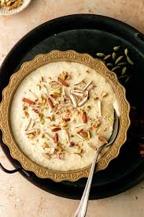

Kheer

Description
Rice Kheer is a classic Indian dessert made with rice, milk, sugar, and nuts. It's a creamy and flavorful treat that's perfect for any occasion. This recipe uses simple ingredients and comes together easily for a delicious homemade dessert.
Ingredients
- 1 cup basmati rice, rinsed
- 4 cups whole milk
- 1/2 cup sugar (or to taste)
- 1/4 cup chopped nuts (cashews, almonds, pistachios, or a mix)
- 1/4 teaspoon ground cardamom
- A few strands of saffron (optional)
- 1 tablespoon ghee (or butter)
- Rosewater (optional, to taste)
Steps
- In a medium saucepan, heat the ghee over medium heat.
- Add the rinsed basmati rice and cook for a minute or two, stirring occasionally, until lightly toasted.
- Pour in the milk and bring to a boil. Reduce heat to low, cover partially, and simmer for 20-25 minutes, or until the rice is cooked through and the milk has thickened. Stir occasionally to prevent sticking.
- Add the sugar and cardamom powder. Stir well and simmer for another 5 minutes, or until the sugar dissolves and the kheer reaches your desired consistency (slightly thicker than porridge).
- Turn off the heat. If using saffron, add it now and let it steep for a few minutes to release its flavor.
- Stir in the chopped nuts. Add a few drops of rosewater (optional) for a touch of floral aroma. Taste and adjust sweetness if needed.
- Serve the kheer warm or chilled, garnished with additional nuts and saffron (optional).